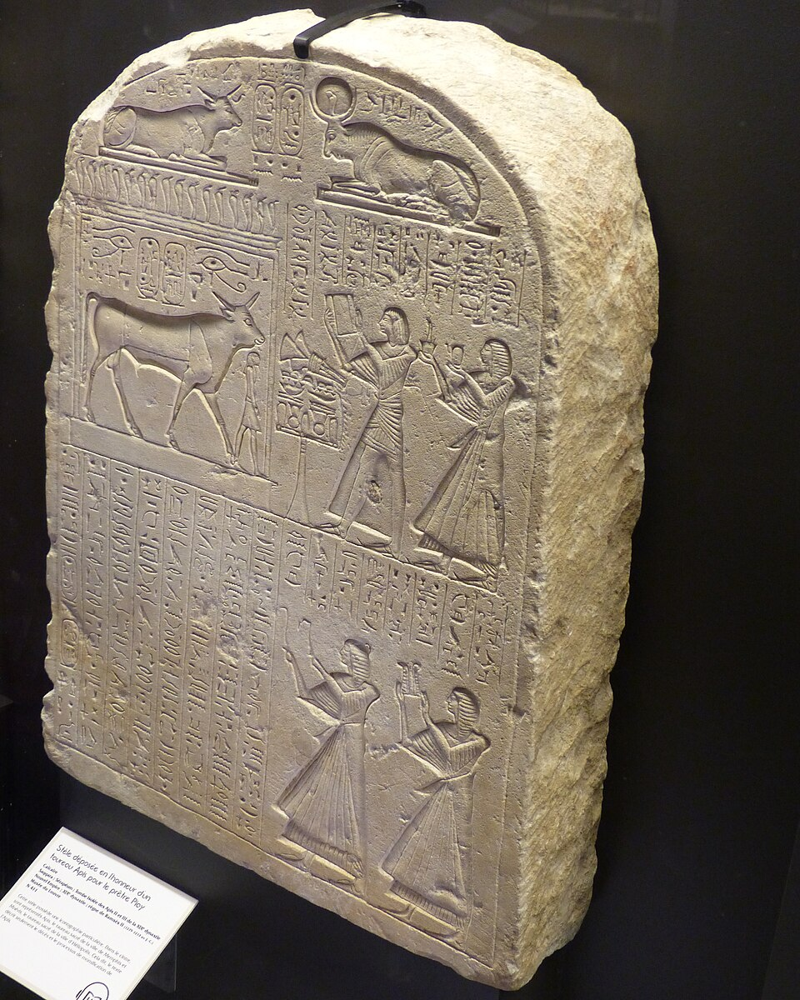

В Египте богу строили храм — но могли и выкормить. Апис — чёрный бык, в которого вселялся Птах, демиург Мемфиса: «сущий вторым» (первым был сам Птах, Апис — его земной двойник). Живого быка не резали и не доили: он жил во дворе храма с гаремом коров, его водили на процессиях, гадая по его шагам, и когда он умирал — весь Египет надевал траур, как по фараону.
Апис — не «бог-бык вообще»: это конкретное животное в конкретное время. Когда умирал один Апис, жрецы Мемфиса шли по селениям искать нового по знакам. Нашедший получал вознаграждение; «нашедший Аписа» — должность и сюжет множества надписей. Так божество переживало смену тел, а культ — тысячелетия.
Приметы
Геродот оставил список черт, по которым узнавали Аписа: весь чёрный; на лбу белый треугольник (у некоторых — «орёл» на спине); на спине узор, похожий на крылья коршуна; на языке — священный нарост; хвостовые волосы закручены вправо. Жрецы сверяли знаки буквально. Быка с приметами на время ставили в дом «Исиды-кормилицы» — его «сестры-воспитательницы», через четыре месяца переводили на ладье в Мемфис и усаживали на трон.
Жизнь и похороны
- Срок «службы» по счёту Геродота — 25 лет: срок лунно-сопряжённого цикла; срок мог прерваться и раньше.
- Умирал — семьдесят дней траура (в точности как при мумификации царя), затем пышные похороны с плакальщицами; при Птолемеях траур превратился в праздник с греческими атлетами — и за это александрийцы высмеивали римлян.
- Нового Аписа «находили» с радостью и несли по селениям; жрец-«носитель Аписа» нёс на плечах ящик с его атрибутами.
- Гадание: из двух предложенных кушаний бык выбирал «знак» — оракул работал на ярмарках и при дворе.
Серапеум
Под Саккарой, у некрополя Мемфиса, высечен Серапеум — подземная галерея с гранитными и базальтовыми саркофагами Аписов весом под 70 тонн, каждый — монолит с крышкой; пустые шахты до сих пор поражают точностью. Рядом — алея сфинксов и храм над землёй. Кладка шахт и «гробницы строителей» — ремесленная деревня, чьи остраконы сохранили имена каменотёсов: ирония в том, что хоронили быка, а работали люди из той же долины.
Апис и Осирис
Умерев, Апис становился «Осирисом-Аписом» (Usar-Hapi) и соединялся с Осирисом, владыкой Запада: бык, как и всякая душа, проходил суд и входил в вечность. От этого слияния родилась великая эллинистическая фигура — Серапис: Птолемей I сделал «Осириса-Аписа» греко-египетским богом-покровителем Александрии, с храмом-Серапеумом над городом. Так мемфисский бык стал интернациональным божеством, которому молились от Рима до Босфора.
Смерть культа
Апис пережил фараонов, персов, греков и римлян. Последний достоверно известный Апис погребён в 360 году нашей эры — уже при римских императорах; после этого нитка обрывается. В 391 г. христианские толпы снесли александрийский Серапеум: с ним угас и великий образ Осириса-Аписа. Но подземелья Саккары — на месте.
Интересные факты
- Камбис, по Геродоту, заколол только что «найденного» Аписа на пиру и сошёл с ума; египетский траур стал его «доказательством вины».
- Жертвенный бык на рельефах — не Апис: быка приносили в жертву, Аписа не убивали никогда.
- Апису принадлежал «дом Аписа» с землями и пастбищами: культ кормил целый штат жрецов, пастухов и писцов.
- На статуэтках Апис — бык с солнечным диском и уреем между рог и «крыльями» на крупе:Солнце и царственность поверх бычьей силы.